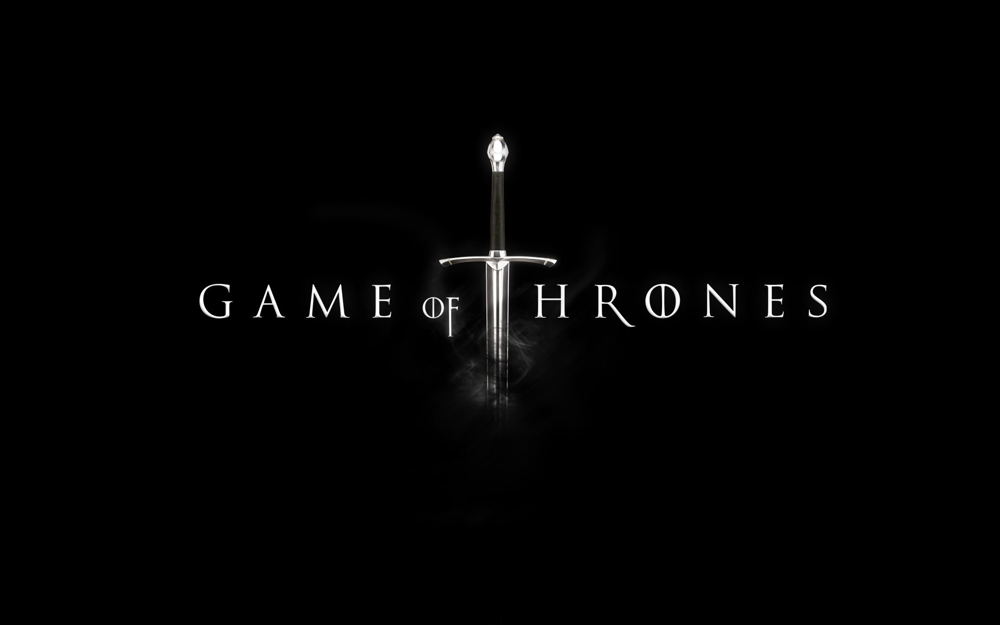

- 


A grey direwolf on a white field
Winter is Coming
Winterfell
North
The Lords of Winterfell Kings in the North Lords Paramount of the North Wardens of the North
King Jon Snow Princess Sansa Stark Prince Bran Stark

House Stark of Winterfell is a Great House of Westeros, ruling over the vast region known as the North and the Vale as Kings in the North from their seat in Winterfell.Jon Snow is the current King in the North and the Vale, partially due to the allegiance of Petyr Baelish, the Lord Regent of the Vale, to House Stark.
A golden lion rampant on a crimson field
Hear Me Roar A Lannister always pays his debts
Red Keep Casterly rock
The Westerlands
The Crownlands
Queen of the Andals and the first men Protector of the seven kingdoms The Lords of Casterly Rock Lords Paramount of the Westerlands Wardens of the West
Queen Cersei Lannister
Ser Jaime Lannister

House Lannister of Casterly Rock is one of the Great Houses of Westeros, one of its richest and most powerful families and oldest dynasties. It is also the current royal house of the Seven Kingdoms following the extinction of House Baratheon of King's Landing.
King Tommen, commits suicide after watching the Great Sept explode and hearing of the deaths. With his death, House Baratheon of King's Landing – and the main branch, House Baratheon - becomes officially extinct. With Qyburn as her Hand and no opposition, Cersei ascends to the Iron Throne, thus elevating House Lannister as the royal family and establishing a formal Lannister dynasty – something her late father had desired
A red three-headed dragon, on a black field
Fire and Blood
Great Pyramid, Meereen
Dragon stone
Bay of dragons
Queen of Meereen Protector of the Realm Lord of the Seven Kingdom Queen of the Andals and the First Men
Queen Daenerys Targaryen

House Targaryen is a former Great House of Westeros and was the ruling royal House of the Seven Kingdoms for three centuries, before it was deposed during Robert's Rebellion and House Baratheon replaced it as the new royal House. The few surviving Targaryens fled into exile. Currently based in Essos, House Targaryen seeks to retake the Seven Kingdoms from House Lannister, who formally replaced House Baratheon as the royal House following the destruction of the Great Sept of Baelor.Meanwhile, beyond the Wall, Bran Stark discovers that Daenerys isn't the last person with Targaryen blood. Rather, his alleged bastard half-brother, Jon Snow, is actually the son of Rhaegar Targaryen and Lyanna Stark, making him Daenerys's nephew.
A crowned black stag rampant on a gold field
Ours is the fury/p>
Storm's End
The Stormlands
Lord of Storm's end Lord Paramount of the storm's end

House Baratheon of Storm's End is a legally extinct Great House of Westeros. Its main branch was formerly the royal house, but House Lannister now controls the throne. When the War of the Five Kings began following King Robert Baratheon's death, House Baratheon became divided into three distinct factions: one led by Robert's alleged son (who is actually the product of an incestuous relationship between Queen Cersei and Ser Jaime Lannister), Joffrey; one led by his younger brother, Stannis; and one led by his youngest brother, Renly.
A silver trout leaping on a red and blue background
family,duty,honor
Riverrun
The riverlands
Lord of Riverrun Lord Paramount of the riverlands/br>
Lord Edmurd tully

House Tully of Riverrun is an exiled Great House of Westeros. Its most senior member carried the title of Lord of Riverrun and Lord Paramount of the Trident, until the Red Wedding. The current head is Lord Edmure Tully, son of the late Hoster Tully. Later, Ser Brynden Tully gathered the remaining Tully forces and reclaimed Riverrun from the Freys, reopening conflict between the Tullys and the Iron Throne. The Freys lay siege to Riverrun, and were later assisted by the Lannisters on the orders of King Tommen I. Ser Jaime Lannister managed to end the siege by convincing Edmure Tully to command the garrison to lay down their weapons in return for clemency and protection. Brynden was killed during a final stand with Lannister and Frey forces while Edmure was returned to the Freys as a prisoner.
A golden kraken on a black field
What is dead may never die
We do not sow
Pyke
Iron lands
King of the Iron Islands
Lord Reaper of Pyke
Son of the Sea Wind
King of Salt and Rock
Lord of the Iron Islands
King Euron Greyjoy Queen yara greyjoy

House Greyjoy of Pyke is one of the Great Houses of Westeros. It rules over the Iron Islands, a harsh and bleak collection of islands off the west coast of Westeros, from the castle at Pyke. The head of the house is the Lord Reaper of Pyke.House Greyjoy has been in open rebellion against the Iron Throne since the War of the Five Kings, during which it sought independence for the Iron Islands once more. However, following the death of King Balon Greyjoy and the election of his brother, Euron, as the new King of the Iron Islands, House Greyjoy has been divided between Euron and his followers, and Balon's surviving children, Yara and Theon, and their followers.
A white falcon volant and crescent moon on a blue field
As High as Honor
The Eyrie
The Vale of Arryn
The Lord of the Eyrie
The Lord Paramount of the vale
Warden of the east
King of mountain and the vale
Robin Arryn Peter Baelish

House Arryn of the Eyrie is one of the Great Houses of Westeros. It has ruled over the Vale of Arryn for millennia, originally as the Kings of Mountain and Vale and more recently as Lords Paramount of the Vale and Wardens of the East under the Targaryen kings and Baratheon-Lannister kings. The nominal head of House Arryn is Robin Arryn, the Lord of the Eyrie, with his stepfather Petyr Baelish acting as Lord Protector until he reaches the age of majority.Lord Petyr Baelish ,Protector of the Vale Under his rule, supervised by Baelish, the Vale assists House Stark in toppling House Bolton in the North during the Battle of the Bastards. After the battle, the Vale declares for House Stark and becomes part of the Kingdom of the North in defiance of the Iron Throne.
A red sun pierced by a gold spear, on an orange field
Unbowed, Unbent, Unbroken
Sunspear
dorne
prince of dorne
Lord of sunspear
Ellaria Sand

House Martell of Sunspear is a legally extinct Great House of Westeros. It ruled the peninsula of Dorne in the far south of the continent from their castle Sunspear. Though loyal to the Iron Throne, the Martells were never conquered by the Targaryens and pursued a more isolated role in wider political events since Robert's Rebellion.With the assassinations of Prince Doran Martell and his only heir, Prince Trystane, by Ellaria Sand and the Sand Snakes, House Martell is legally extinct, although the Sand Snakes themselves carry Martell blood through their father Oberyn. The Sand Snakes also continue to use the Martell sigil to represent themselves and Dorne.
A golden rose on a green field
Growing strong
High garden
The reach
Lords of Highgarden
Lords Paramount of the Reach
Wardens of the South
lady olenna tyrell

House Tyrell of Highgarden is one of the Great Houses of Westeros. It rules over the Reach, a vast, fertile, and heavily-populated region of southwestern Westeros, from their castle-seat, Highgarden. Formerly led by Lord Mace Tyrell, his mother, the indomitable Olenna Tyrell, stands as the last known member of the house. Mace's son Loras was a noted tournament knight (and, secretly, the lover of Lord Renly Baratheon). Mace's daughter Margaery married Renly when he crowned himself king, to cement the alliance between Renly and her father. Following Renly's death, Margaery was then married to King Joffrey Baratheon before his assassination at his wedding feast. She was then married to his younger brother, King Tommen Baratheon. Olenna Tyrell assumed House Tyrell's lordship as Margaery Tyrell, Loras Tyrell, and Mace Tyrell were killed by wildfire by at the destruction of the Great Sept of Baelor. Under Lady Olenna, who has served as the head of the house since, House Tyrell has aligned itself with House Targaryen in opposition against Queen Cersei I for orchestrating the demise of most of the main branch of the Tyrell family..
Game of thrones is one of the highest rated Tv shows. It's IMDB rating is 9.5 .Till now six seasons of the show are finished and seventh season of this show is set to premiere on HBO later in mid-2017.Unlike previous seasons that all consisted of ten episodes, the seventh season will consist of only seven episodes.HBO ordered the seventh season on April 21, 2016, just three days before the premiere of the show's sixth season, and began filming on August 31, 2016. The season was filmed primarily in Northern Ireland, Spain, and Iceland.